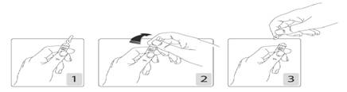

RÉSUMÉ DES CARACTÉRISTIQUES DU PRODUIT
ANSM - Mis à jour le : 04/05/2011
CALCIPARINE SOUS CUTANEE 20 000 UI/0,8 ml, solution injectable
2. COMPOSITION QUALITATIVE ET QUANTITATIVE
Héparine calcique ................................................................................................................ 20 000 UI/0,8 ml
Correspondant à une concentration de 25 000 UI/ml
Pour la liste complète des excipients, voir rubrique 6.1.
Solution injectable.
4.1. Indications thérapeutiques
Cette héparine est une héparine classique, dite non fractionnée. Ses indications sont les suivantes:
· traitement:
o des thromboses veineuses profondes constituées et de l'embolie pulmonaire, à la phase aiguë,
o de l'infarctus du myocarde avec ou sans onde Q et de l'angor instable, à la phase aiguë,
o des embolies artérielles extracérébrales,
· prévention des accidents thromboemboliques veineux,
o en milieu chirurgical,
o chez les patients alités, présentant une affection médicale aiguë (notamment en post-infarctus, en cas d'insuffisance cardiaque, après un accident vasculaire cérébral ischémique avec paralysie des membres inférieurs). L'utilisation est dans ce cas réservée à l'insuffisance rénale sévère (clairance de la créatinine de l'ordre de moins de 30 ml/min selon l'estimation de la formule de Cockroft) comme alternative possible à la prescription d'une héparine de bas poids moléculaire.
4.2. Posologie et mode d'administration
La concentration de cette héparine est de 25.000 U.I./ml. Toutes les héparines n'étant pas à la même concentration, les prescriptions doivent être rédigées en U.I.
a) Traitement curatif
Schéma posologique
Cette héparine doit être administrée par voie sous-cutanée.
On peut administrer en même temps que la première injection sous-cutanée, un bolus de 50 à 100 UI/kg d'héparine IV, par voie intraveineuse directe, pour atteindre dès le début du traitement une héparinémie efficace.
La dose initiale est de 500 UI/kg par 24 heures par voie sous-cutanée, répartie en deux (toutes les 12 h) ou trois (toutes les 8 h) injections par jour, en fonction du volume à injecter. En effet, l'injection par voie sous-cutanée d'une quantité supérieure à 15 000 UI (soit 0,6 ml) pourrait diminuer la résorption de l'héparine.
La dose d'héparine sera ensuite adaptée en fonction des résultats du contrôle biologique.
Surveillance biologique
Elle doit être au minimum quotidienne, le premier prélèvement doit avoir lieu exactement entre les deux premières injections (soit 6 ou 4 heures après la première, selon que 2 ou 3 injections sont prévues dans la journée). Un prélèvement doit être effectué après chaque modification de dose.
On peut utiliser en fonction des cas:
· le temps de céphaline activé (TCA) qui doit se situer entre 1 fois et demie et trois fois le témoin selon la sensibilité du réactif utilisé (à définir par le laboratoire),
· l'activité anti-Xa (héparinémie), qui est un test spécifique. Elle doit se situer entre 0,2 et 0,6 UI/ml. Ce test sera préféré en cas d'anomalies du TCA préexistantes, chez les malades de réanimation et en cas de syndrome inflammatoire marqué.
Relais de l'héparine par les anticoagulants oraux (AVK)
Chaque fois que cela est possible, les AVK seront introduites entre le premier et le troisième jour de traitement, de façon à ce que la durée totale de l'héparinothérapie n'excède pas 7 à 10 jours.
En raison du temps de latence précédant le plein effet de l'AVK utilisé, l'héparine ne sera interrompue que lorsque l'INR sera 2 jours consécutifs dans la zone thérapeutique souhaitable. Celle-ci est variable selon la pathologie traitée.
Pendant cette période, la surveillance du TCA sera particulièrement attentive pour éviter un risque d'hémorragie.
b) Prévention des accidents thromboemboliques veineux:
En milieu chirurgical
Un schéma thérapeutique standard peut être proposé pour les opérés de chirurgie générale, digestive, urologique, gynécologique: 5000 UI d'héparine sous-cutanée 2 heures avant l'intervention, puis 5000 UI toutes les 12 heures pendant 10 jours au moins, après l'intervention. La surveillance du TCA et/ou de l'activité anti-Xa ne sont pas indispensables mais la surveillance de la numération plaquettaire est nécessaire (voir rubrique 4.4).
Dans certaines situations médicales
La posologie habituelle est de 5000 UI toutes les 12 heures.
En cas de haut risque thromboembolique en milieu chirurgical ou médical, la posologie pourra éventuellement être augmentée à 5 000 UI 3 fois par jour et adaptée de façon à générer un allongement modéré du TCA (1,2 à 1,3 fois le temps du témoin), lorsque le prélèvement est effectué à mi-chemin entre deux injections. En pratique, il est recommandé de préférer l'utilisation d'une HBPM à ce schéma complexe.
Mode d'administration
VOIE SOUS-CUTANEE stricte.
Ne pas injecter par voie intra-musculaire.
A titre indicatif:
2500 UI correspond à 0,1 ml
5000 UI correspond à 0,2 ml
7500 UI correspond à 0,3 ml
10 000 UI correspond à 0,4 ml
12 500 UI correspond à 0,5 ml
15 000 UI correspond à 0,6 ml
17 500 UI correspond à 0,7 ml
20 000 UI correspond à 0,8 ml
22 500 UI correspond à 0,9 ml
25 000 UI correspond à 1 ml
Technique d'injection:
L'injection doit être réalisée dans le tissu cellulaire sous-cutané de la ceinture abdominale antéro-latérale et postéro-latérale, tantôt à droite, tantôt à gauche.
L'aiguille doit être introduite perpendiculairement et non tangentiellement, dans l'épaisseur d'un pli cutané réalisé entre le pouce et l'index de l'opérateur. Le pli doit être maintenu durant toute la durée de l'injection.
· Quelles que soient les doses (curatives ou préventives), ce médicament NE DOIT PAS ETRE PRESCRIT dans les situations suivantes:
o hypersensibilité à l'héparine;
o antécédents de thrombopénie grave de type II (thrombopénie induite par l'héparine ou TIH), sous héparine non fractionnée ou sous héparine de bas poids moléculaire.
(voir rubrique 4.4 - TIH );
o maladies hémorragiques constitutionnelles;
· à dose curative, dans les situations suivantes:
o lésion organique susceptible de saigner;
o manifestations ou tendances hémorragiques liées à des troubles de l'hémostase;
o hémorragie intracérébrale;
o de plus, une anesthésie péridurale ou une rachianesthésie ne doivent jamais être effectuées durant un traitement par héparine à dose curative.
· à dose curative, ce médicament est GENERALEMENT DECONSEILLE en cas d':
o accident vasculaire cérébral ischémique étendu à la phase aiguë, avec ou sans troubles de la conscience. Lorsque l'accident vasculaire cérébral est d'origine embolique, le délai est de 72 heures. La preuve de l'efficacité de l'héparine à dose curative n'a pas été établie à ce jour, quelles que soient la cause, l'étendue et la sévérité clinique de l'infarctus cérébral;
o endocardite infectieuse aiguë (en dehors de celles survenant sur prothèse mécanique);
o hypertension artérielle non contrôlée.
· à dose préventive ce médicament est GENERALEMENT DECONSEILLE, dans les 24 premières heures qui suivent une hémorragie intracérébrale.
· Quelles que soient les doses, les médicaments suivants sont GENERALEMENT DECONSEILLES en association avec l'héparine (voir rubrique 4.5):
o l'acide acétylsalicylique (en tant qu'analgésique et antipyrétique),
o les AINS,
o le dextran.
4.4. Mises en garde spéciales et précautions d'emploi
Devant un patient sous héparine (à dose curative ou préventive) qui présente un événement thrombotique, tel que:
· un accident vasculaire cérébral ischémique,
· un infarctus du myocarde,
· une ischémie aiguë des membres inférieurs,
· une embolie pulmonaire,
· une phlébite,
· une aggravation de la thrombose pour laquelle il est traité,
Il faut systématiquement penser à une thrombopénie induite par l'héparine (TIH) et faire pratiquer en urgence une numération des plaquettes. (voir rubrique 4.4).
En cas de rachianesthésie l'injection de la dose d'héparine préventive doit se faire 6 heures après que les cathéters intra-rachidiens aient été enlevés.
Le rapport bénéfice risque de l'administration de faible dose d'héparine avant une anesthésie loco-régionale intrathécale ou périmédullaire doit être évalué pour chaque patient. Le risque de survenue d'un hématome périmédullaire dépend de la technique utilisée et de l'expérience de l'opérateur. Il augmente dans l'ordre suivant:
· rachianesthésie sans cathéter,
· rachianesthésie avec mise en place de cathéter,
· anesthésie péridurale,
· anesthésie péridurale avec mise en place de cathéter.
Précautions d'emploi
La surveillance du traitement sera renforcée en cas d'antécédents d'ulcères digestifs, de maladies vasculaires de la choriorétine ou en période postopératoire après chirurgie du cerveau et de la moelle épinière.
La ponction lombaire devra être discutée en tenant compte du risque de saignement intra-rachidien. Elle devra être différée chaque fois que possible.
L'héparine peut freiner la sécrétion d'aldostérone et entraîner de rares cas d'hypoaldostéronisme avec hyperkaliémie et (ou) acidose métabolique. Ceci a été observé particulièrement chez les patients ayant une kaliémie élevée et chez les patients à risque (diabétiques, insuffisants rénaux chroniques, acidose métabolique préexistante, traitement par des médicaments susceptibles d'augmenter la kaliémie tels que les IEC et les AINS). Le risque d'hyperkaliémie augmente avec la durée du traitement et est habituellement réversible. En cas de traitement prolongé, une surveillance de la kaliémie peut être effectué chez les patients à risque.
Surveillance plaquettaire
En raison du risque de TIH, une surveillance de la numération plaquettaire est nécessaire, quelles que soient l'indication du traitement et la posologie administrée.
Pratiquer une numération plaquettaire avant traitement puis deux fois par semaine pendant 21 jours: au-delà de cette période, si un traitement prolongé s'avère nécessaire dans certains cas particuliers, le rythme de contrôle peut être porté à une fois par semaine, et cela jusqu'à l'arrêt du traitement.
Thrombopénie induite par héparine ou TIH
Il existe un risque de thrombopénie grave, parfois thrombosante, induite par l'héparine (héparine non fractionnée et moins fréquemment héparines de bas poids moléculaire), d'origine immunologique dite de type II (voir aussi la rubrique 4.8). La TIH est définie par un chiffre de plaquettes < 100.000 et/ou une chute relative des plaquettes de 30 à 50 % sur 2 numérations successives. Elle apparaît essentiellement entre le 5ème et le 21ème jour suivant l'instauration du traitement héparinique (avec un pic de fréquence aux environs du 10ème jour) mais peut survenir beaucoup plus précocement lorsqu'existent des antécédents de thrombopénie sous héparine. Pour cette raison, ceux-ci seront systématiquement recherchés au cours d'un interrogatoire approfondi avant le début du traitement. En outre, le risque de récidive, en cas de réintroduction de l'héparine, peut persister plusieurs années, voire indéfiniment. (voir rubrique 4.5).
Dans tous les cas, l'apparition d'une TIH constitue une situation d'urgence et nécessite un avis spécialisé.
Toute baisse significative (30 à 50 % de la valeur initiale) de la numération plaquettaire doit donner l'alerte, avant même que cette valeur n'atteigne un seuil critique. La constatation d'une diminution du nombre des plaquettes impose dans tous les cas:
1) un contrôle immédiat de la numération;
2) la suspension du traitement héparinique, si la baisse est confirmée voire accentuée lors de ce contrôle.
· Dans ces conditions, la conduite à tenir immédiate ne repose pas sur le résultat des tests d'agrégation plaquettaire in vitro ou les tests immunologiques; en effet, le résultat n'est obtenu dans le meilleur des cas qu'au bout de plusieurs heures. Ces tests doivent cependant être réalisés pour aider au diagnostic de cette complication.
En cas de poursuite du traitement héparinique, le risque de thrombose est majeur;
3) la prévention ou le traitement des complications thrombotiques de la TIH.
Si la poursuite de l'anticoagulation semble indispensable, l'héparine doit être relayée par une autre classe d'antithrombotique: danaparoïde sodique ou hirudine, prescrits suivant les cas à dose préventive ou curative.
Le relais par l'AVK ne sera pris qu'après normalisation de la numération plaquettaire, en raison du risque d'aggravation du phénomène thrombotique par les AVK.
4.5. Interactions avec d'autres médicaments et autres formes d'interactions
+ Acide acétylsalicylique en tant qu'analgésique et antipyrétique (et, par extrapolation, autres salicylés) (voie générale)
Augmentation du risque hémorragique (inhibition des fonctions plaquettaires et agression de la muqueuse gastro-duodénale par les salicylés).
Utiliser un analgésique antipyrétique non salicylé.
+ A.I.N.S. (voie générale)
Augmentation du risque hémorragique (inhibition des fonctions plaquettaires et agression de la muqueuse gastro-duodénale par les anti-inflammatoires non stéroïdiens).
Si l'association ne peut être évitée, surveillance clinique et biologique étroite.
+ Dextran 40 (voie parentérale)
Augmentation du risque hémorragique (inhibition des fonctions plaquettaires par le dextran 40).
Ajuster la posologie de l'héparine de façon à ne pas dépasser une hypocoagulabilité supérieure à 1,5 fois le témoin, pendant l'association et après l'arrêt du dextran 40.
Associations faisant l'objet de précautions d’emploi
+ Acide acétylsalicylique en tant qu'antiagrégant plaquettaire, autres antiagrégants plaquettaires (ticlopidine, clopidogrel, antagonistes du récepteur GPII b/IIIa plaquettaire, dipyridamole)
Possibilité de majoration du risque hémorragique. Surveillance régulière.
+ Thrombolytiques
Possibilité de majoration du risque hémorragique. Surveillance régulière.
L'héparine ne traverse pas le placenta.
Aucune malformation ni fœtotoxicité de l'héparine n'ont été décrites chez l'animal, ni à ce jour dans l'espèce humaine.
Lors de son utilisation chez la femme enceinte, une prudence particulière s'impose en raison des risques hémorragiques utéroplacentaires, particulièrement au moment de l'accouchement.
Si une anesthésie péridurale est envisagée, il est nécessaire de suspendre l'héparine. (voir rubriques 4.3 et 4.4).
L'héparine n'étant pas excrétée dans le lait maternel et ne passant pas la barrière digestive, l'allaitement est possible.
4.7. Effets sur l'aptitude à conduire des véhicules et à utiliser des machines
Sans objet.
Les fréquences des effets indésirables ont été estimées selon la convention suivante: très fréquent (≥ 10%); fréquent (de 1% à 10%); peu fréquent (de 0,1% à 1%); rare (0,01% à 0,1%); très rares (≤ 0,01%).
· Manifestations hémorragiques: très fréquemment observées. Des facteurs de risque tels que des lésions organiques susceptibles de saigner, une insuffisance rénale, certaines associations médicamenteuses (voir rubriques 4.3 et 4.5) peuvent majorer ces manifestations.
· Très rares cas d'hématomes spinaux dans le cadre d'anesthésies péridurales ou rachianesthésies, et de ponctions lombaires (voir rubriques 4.3 et 4.4).
· Des thrombopénies ont fréquemment été rapportées. Celles-ci sont de 2 types:
o les plus fréquentes, de type I, sont habituellement modérées (>100 000), précoces (avant le cinquième jour) et ne nécessitent pas l'arrêt de l'héparine,
o rarement des thrombopénies graves de type II (TIH). Leur prévalence est encore mal évaluée (voir rubriques 4.3 et 4.4).
· De rares nécroses cutanées au point d'injection ont été signalées avec les héparines. Ces réactions peuvent être précédées d'un purpura ou de placards érythémateux, infiltrés et douloureux. La suspension du traitement doit être immédiate.
· L'administration par voie sous-cutanée peut entraîner très fréquemment la survenue d'hématomes aux points d'injection. Ils sont majorés par le non respect de la technique d'injection ou l'utilisation d'un matériel d'injection inadéquat. Des nodules fermes disparaissant en quelques jours traduisent un processus inflammatoire et ne sont pas un motif d'arrêt du traitement.
· De très rares cas de calcinoses ont été observés au point d'injection, essentiellement chez les patients insuffisants rénaux sévères.
· Ostéoporose, lors de traitements au long cours.
· Manifestations d'hypersensibilité peu fréquentes, localisées ou généralisées, notamment urticaire, prurit, éruption, érythème, conjonctivite, rhinite, asthme, cyanose, tachypnée, sensations d'oppression, fièvre, frissons, œdème angio-neurotique, et rarement choc anaphylactique. Dans certains cas leur existence doit conduire à l'arrêt du traitement.
· Effets divers:
o cas fréquents d'élévation des transaminases et des γGT;
o rares cas d'hyperéosinophilie parfois accompagnée d'éruption;
o très rares cas d'alopécie;
o très rares cas de priapisme;
o de très rares cas d'hypoaldostéronisme avec hyperkaliémie et (ou) acidose métabolique ont été rapportés, en particulier, chez des patients à risque (diabétiques, insuffisants rénaux) (voir rubrique 4.4).
· Le surdosage accidentel après administration de doses massives d'héparine peut entraîner des complications hémorragiques. Le risque hémorragique est proportionnel au niveau d'hypocoagulabilité et à l'intégrité vasculaire de chaque malade.
Il existe un antidote: le sulfate de protamine, qui neutralise l'héparine en formant un complexe inactif avec l'héparine.
100 U A H de protamine neutralise l'activité de 100 UI d'héparine.
La dose de protamine utile est fonction:
o de la dose d'héparine injectée,
o du temps écoulé depuis l'injection de l'héparine, avec éventuellement une réduction des doses de l'antidote.
Cependant, l'utilisation de cet antidote doit tenir compte de ses effets indésirables potentiels.
· En cas d'ingestion massive d'héparine par voie orale, aucune conséquence grave n'est, a priori, à redouter, compte tenu de la très faible résorption du produit aux niveaux gastrique et intestinal.
5. PROPRIETES PHARMACOLOGIQUES
5.1. Propriétés pharmacodynamiques
ANTITHROMBOTIQUES, Code ATC: B01AB01
Ce médicament est une héparine non fractionnée, anticoagulant d'action immédiate.
La fixation de l'héparine sur l'antithrombine (anciennement antithrombine III) augmente considérablement (x 1000) l'activation naturelle de l'inhibiteur vis à vis de la thrombine, du facteur Xa et de tous les facteurs activés de la coagulation. Il en résulte une activité anticoagulante puissante qui dépend de la concentration d'héparine, de la concentration de l'antithrombine et de celles des facteurs de la coagulation. Le terme d'héparinémie est utilisé pour la mesure de l'activité de l'héparine qui résulte de ces interactions complexes.
5.2. Propriétés pharmacocinétiques
Injectée par voie sous-cutanée, la solution concentrée d'héparine calcique diffuse lentement dans la circulation sanguine.
Après passage dans la circulation, une partie des molécules d'héparine administrée est neutralisée par de nombreux facteurs (facteur plaquettaire 4, protéines sanguines dont le fibrinogène, système réticulo-endothélial) et éliminée par captation cellulaire. Le surplus est éliminé par les reins. Aux doses normales d'utilisation, les reins n'interviennent pas dans l'élimination de l'héparine. La partie restante subit une dilution dont la valeur varie suivant le volume plasmatique et en particulier l'hématocrite et s'associe au cofacteur de l'héparine (antithrombine).
Après injection d'une dose efficace par voie sous-cutanée, l'activité de l'héparine apparaît après un délai de l'ordre de 30 à 60 min, atteint un taux maximum entre 120 et 150 min et disparaît après une durée de 8 à 14 heures selon les sujets. La demi-vie apparente est de 4 heures environ.
Ces différents paramètres de neutralisation, d'élimination, d'association aux cofacteurs varient d'un sujet à l'autre et chez un même sujet d'un moment à l'autre.
5.3. Données de sécurité préclinique
Sans objet.
Acide chlorhydrique concentré ou hydroxyde de calcium, eau pour préparations injectables.
En l'absence d'études de compatibilité, ce médicament ne doit pas être mélangé avec d'autres médicaments.
3 ans.
Après ouverture: le produit doit être utilisé immédiatement.
6.4. Précautions particulières de conservation
A conserver à une température ne dépassant pas + 30°C.
6.5. Nature et contenu de l'emballage extérieur
0,8 ml de solution en ampoule (Verre de type I), seringue (Polypropylène) avec aiguille- boîte de 2 ou 10.
0,8 ml de solution en ampoule (Verre de type I), boîte de 20, 50 ou 100.
6.6. Précautions particulières d’élimination et de manipulation
Pour ouvrir l'ampoule:
Tenir fermement l'ampoule, le point coloré face à vous (schéma 1). Saisir la tête de l'ampoule entre le pouce et l'index (le pouce sur le point coloré), puis exercer une pression vers l'arrière (schémas 2 et 3).

7. TITULAIRE DE L’AUTORISATION DE MISE SUR LE MARCHE
SANOFI-AVENTIS FRANCE
1-13, boulevard Romain Rolland
75014 Paris
8. NUMERO(S) D’AUTORISATION DE MISE SUR LE MARCHE
· 301 676-3: 0,8 ml de solution en ampoule (Verre de type I), seringue (Polypropylène) avec aiguille; boîte de 2.
· 552 434-0: 0,8 ml de solution en ampoule (Verre de type I), seringue (Polypropylène) avec aiguille; boîte de 10.
· 556 705-9: 0,8 ml de solution en ampoule (Verre de type I); boîte de 20.
· 556 706-5: 0,8 ml de solution en ampoule (Verre de type I); boîte de 50.
· 556 707-1: 0,8 ml de solution en ampoule (Verre de type I); boîte de 100.
9. DATE DE PREMIERE AUTORISATION/DE RENOUVELLEMENT DE L’AUTORISATION
[à compléter par le titulaire]
10. DATE DE MISE A JOUR DU TEXTE
[à compléter par le titulaire]
Sans objet.
12. INSTRUCTIONS POUR LA PREPARATION DES RADIOPHARMACEUTIQUES
Sans objet.
Liste I.